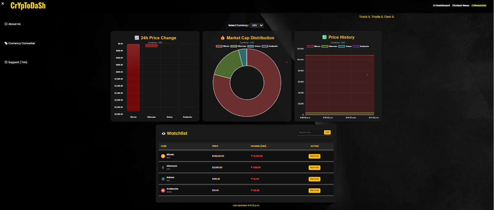

CryptoDash — Real-Time Cryptocurrency Dashboard
Developed a live cryptocurrency dashboard with real-time prices, market data, and trends using Java, Spring Boot, and JavaScript.
Built a dynamic web application integrating external cryptocurrency APIs to display live market data and historical trends. Implemented backend services with Spring Boot and RESTful endpoints for data management. Currently developing an AI-powered chatbot to enhance user interaction and provide intelligent market insights.